Product guide
Supplier risk map
The Supplier risk map shows a company where its suppliers' sites are concentrated, which owner companies hold many of them, and which sites are inside a current disaster area. It is for the company's own procurement and risk team, and its Chief Procurement Officer.
What it uses
Supplier lists from Open Supply Hub, loaded by upload; current disaster areas from GDACS, read live; and company records from GLEIF, whose parent companies show only after a person confirms a match.
The demo companies are adidas, Nike, Apple, Samsung and Amazon.com, Inc. They are stand-ins, used because their supplier lists are public on Open Supply Hub; this guide does not claim they are FourKites customers.
How to read this guide
- Every screenshot is from the running app. Each numbered marker 1Name sits on the element its note explains; its box was measured on the page when the screenshot was taken.
- Each screenshot is followed by what it shows, what each marked control does, what you do, and what happens next.
- Code only marks behaviour that is in the app's source code but not shown in a screenshot.
- Nothing was confirmed, rejected, undone, loaded or refreshed for this guide. Buttons that would change data are described, not clicked.
- The button at the bottom right hides or shows the markers.
Captured
- Date
- 3 Oct 2026, 13:07 UTC (18:37 India Standard Time)
- Header showed
- Disaster data: 3 Oct 2026, 12:38 UTC
- Screen
- 1440 × 900 px, at 2×
- Browser
- Headless Chrome 154
- App version
- commit 25de639
- Screenshots
- 27
Disaster data is live. On another day the disaster areas, the sites inside them, and every sentence and count that mentions them will differ from these screenshots.
Contents
All 27 screenshots
- Figure 1 Header and tabs (adidas)
- Figure 2 A company switch: Loading Nike…
- Figure 3 The summary sentence and the three answer cards
- Figure 4 The map: Plain style, flat
- Figure 5 Globe view
- Figure 6 Show all current disasters, turned on
- Figure 7 How these numbers are worked out
- Figure 8 Source and limits of the data
- Figure 9 Countries table
- Figure 10 Country panel: Vietnam (adidas)
- Figure 11 Owner companies table
- Figure 12 Owner panel: POU CHEN (adidas)
- Figure 13 Site panel: PT. Paxar Indonesia (Nike)
- Figure 14 Disaster panel: drought DR1018332 (Amazon)
- Figure 15 Their owners, and those owners' other sites (Amazon)
- Figure 16 Inside the area, but not counted (Amazon)
- Figure 17 Those owners' other sites (Apple, the same drought)
- Figure 18 Upload a supplier list
- Figure 19 data/demo/amazon.csv chosen (not loaded)
- Figure 20 data/demo/amazon.csv chosen: the company name (not loaded)
- Figure 21 data/demo/facilities.csv chosen: suggestions (not loaded)
- Figure 22 Company network: adidas, a candidate not decided
- Figure 23 Company network: PT. Paxar Indonesia (Nike), confirmed
- Figure 24 Company network: HENKEL AG AND KGAA (Apple), a shared verdict
- Figure 25 Company network: Samsung, no candidates yet
- Figure 26 Map style "Map": place names
- Figure 27 Map style "Satellite"
2Getting around
Every page has the same bar at the top: the company you are looking at, when disaster data was last read, and the three pages.
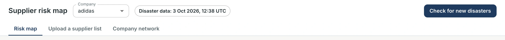
1Company2Disaster data3Check for new disasters4Pages
Shown The top bar on the Risk map page, with adidas chosen.
- 1Company. Chooses whose supplier lists you see. Every number, map, panel and table below then belongs to that company only. Changing it on Risk map or Upload a supplier list opens Risk map; on Company network you stay on that page.
- 2Disaster data. When the app last read GDACS's list of current disasters, in UTC. Here: "Disaster data: 3 Oct 2026, 12:38 UTC".
- 3Check for new disasters. Reads GDACS again now, then reloads the page's numbers. While it runs, the button reads "Checking…". It was not clicked for this guide.
- 4Pages. The three pages: Risk map, Upload a supplier list and Company network.
What you do Pick a company in the Company list, or click a page.
What happens next The page shows that company. While its numbers load, "Loading company…" is shown (Figure 2).
Code only The chip reads "Checking for current disasters…" while the first GDACS check after a start is still running, and the page asks again every 5 seconds. It reads "Disaster data unavailable", outlined in red, when the disaster data could not be read. App.tsx
Code only While a GLEIF candidate search runs for the chosen company, a chip "Finding GLEIF candidates: N of M names" appears next to the company. Clicking it opens Company network. App.tsx
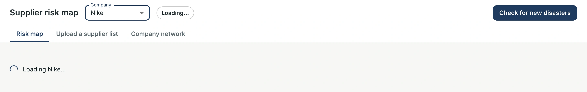
1Company2Loading Nike…
Shown Just after choosing Nike: the chip reads "Loading…", and "Loading Nike…" takes the place of the page until Nike's numbers arrive. For this screenshot only, the capture browser's network was slowed by 4 seconds, so that the message stayed on screen long enough to be captured.
- 1Company. Now Nike.
- 2Loading Nike…. The previous company's numbers and panel are cleared at once, so adidas's numbers never show under Nike's name.
What you do Wait.
What happens next Nike's summary, cards, map and tables appear, and the map fits Nike's sites.
3Risk map, piece by piece
The Risk map page answers three questions for the chosen company: where its suppliers' sites are concentrated, which owner companies hold many of them, and which sites are inside a current disaster area. From top to bottom: the summary and three cards, the map with its details panel, two tables (see Where is my company exposed?), and two sections that explain the numbers. The screenshots in this section use adidas.
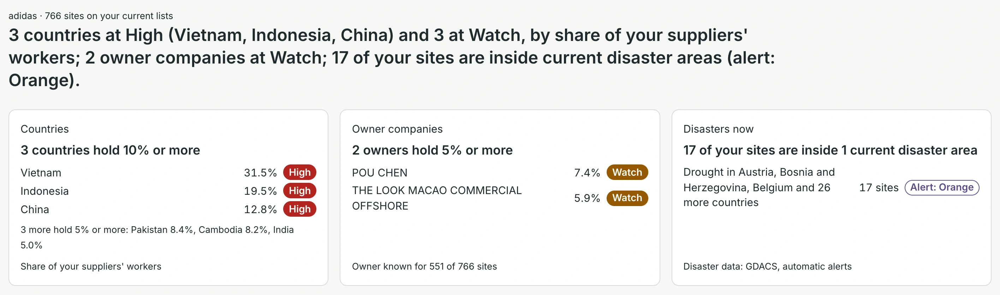
1Company and sites2Summary sentence3Countries4Owner companies5Disasters now
Shown The top of the Risk map page for adidas.
- 1Company and sites. "adidas · 766 sites on your current lists".
- 2Summary sentence. One sentence with the answer: "3 countries at High (Vietnam, Indonesia, China) and 3 at Watch, by share of your suppliers' workers; 2 owner companies at Watch; 17 of your sites are inside current disaster areas (alert: Orange)."
- 3Countries. "3 countries hold 10% or more": Vietnam 31.5%, Indonesia 19.5% and China 12.8%, each High. Below: "3 more hold 5% or more: Pakistan 8.4%, Cambodia 8.2%, India 5.0%". The last line gives the basis: "Share of your suppliers' workers".
- 4Owner companies. "2 owners hold 5% or more": POU CHEN 7.4% and THE LOOK MACAO COMMERCIAL OFFSHORE 5.9%, both Watch. The base: "Owner known for 551 of 766 sites".
- 5Disasters now. "17 of your sites are inside 1 current disaster area": the drought in Austria, Bosnia and Herzegovina, Belgium and 26 more countries, 17 sites, Alert: Orange. The source: "Disaster data: GDACS, automatic alerts".
What you do Click a card.
What happens next The card is outlined and the details panel lists what it counts: the countries at High or Watch, the owners at High or Watch (or the largest owner when none is), or each disaster with your sites inside. The map highlights their sites and moves to them. Clicking the same card again closes its panel.
Code only The panel each card opens ("Where you are most exposed", "Owners holding the biggest shares", "Your sites inside a current disaster area") is not captured in this guide. Panel.tsx, App.tsx
 1Show all2Projection3Map style4Reset view5Zoom, compass6Group of sites7High country8Disaster area9Legend10Details panel
1Show all2Projection3Map style4Reset view5Zoom, compass6Group of sites7High country8Disaster area9Legend10Details panel
Shown The map in its default state: Plain style, Flat map, all of adidas's sites in view, and the empty details panel: "Click a site, a country or a disaster area to see details."
- 1Show all. Show all current disasters. Off (as here), the map draws only the disaster areas that hold at least one of your sites, plus a disaster you selected. On: see Figure 6.
- 2Projection. Flat map or Globe view (Figure 5). Switching moves the map back to your sites.
- 3Map style. Plain, Map or Satellite (see Map styles).
- 4Reset view. Back to all your sites, without tilt or rotation.
- 5Zoom, compass. Zoom in and out. The compass shows the map's rotation and tilt; clicking it turns the map back to north and flat.
- 6Group of sites. Nearby sites are grouped in a circle with their count: here 226. Clicking a group zooms in until it splits.
- 7High country. Vietnam, filled red: High, 10% or more. Countries at Watch (5% to under 10%) are filled amber: India, Pakistan and Cambodia here. Clicking a country opens its panel (Figure 10).
- 8Disaster area. The drought DR1018332's affected area, outlined in purple. Clicking it opens the disaster panel (Figure 14).
- 9Legend. High: 10% or more; Watch: 5% to under 10%; Disaster area; Your site; Group of sites (count); Selected site. The percentages follow the High at and Watch at fields (Figure 7).
- 10Details panel. Shows whatever you click: a site, a country, an owner or a disaster.
What you do Hover over the map, or click a site, a group, a country or a disaster area.
What happens next A click opens the details panel and moves the map to the selection; a click on a group zooms in.
Code only Hovering shows a label: a site's name and country; for a group, "N sites" and "Click to zoom in"; for a country, its name and its level and share (or "N of your sites", or "None of your sites"); for a disaster area, its name and "Disaster area (alert: …)". MapView.tsx
Code only Below the map, outside this screenshot, a line reads "Disaster data: GDACS, automatic alerts. Confirm before acting." When a High or Watch country is too small to draw at the map's scale, another line names it: "Too small to draw at this map scale: … Their sites still show on the map." MapView.tsx
Code only The credits in the bottom-right corner ("Natural Earth | MapLibre" on Plain) are always shown in full. MapView.tsx
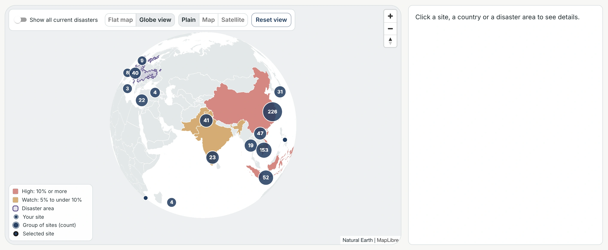
1Globe view2Reset view
Shown The same map as a globe, centred on adidas's sites.
- 1Globe view. Selected. Flat map goes back to the flat projection.
- 2Reset view. On the globe: centres it on your sites again.
What you do Drag to turn the globe; use Flat map to go back.
What happens next Sites, groups, shading and disaster areas behave as on the flat map.
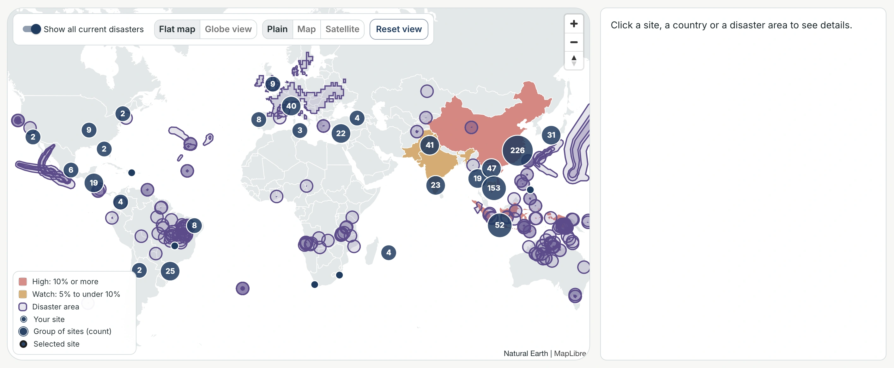
1Show all2None of your sites
Shown Show all current disasters, turned on: every current GDACS affected area is drawn, not only those that hold your sites. Areas narrower than 3 degrees also get a ring, so they can be seen when zoomed out; the many small circles are these rings.
- 1Show all. On.
- 2None of your sites. Tropical Cyclone RACHEL-26 (TC1001329, Green alert). It is drawn only because Show all is on: all 17 of adidas's sites inside a disaster area are in the drought DR1018332.
What you do Turn it off to see only the areas that hold your sites.
What happens next Only the map changes. The summary sentence, the cards and the tables count the same sites with the switch on or off.
Code only The rings are drawn only when zoomed out (below zoom 4.5). MapView.tsx
 123Coverage
123Coverage
Shown "How these numbers are worked out", opened. It explains the counted sites (766 for adidas), the share basis (workers, known for 719 of 766 sites), coverage, the levels and how owners are counted ("56 of 156 owners with 2 or more sites have all of them in one country").
- 1High at (%). The share at which a country or owner is High: 10.
- 2Watch at (%). The share at which it is at Watch: 5. Next to them: "Now: High 10% or more, Watch 5% or more."
- 3Coverage. "Owner known for 551 of 766 sites. Location known for 766 of 766 sites."
What you do Change High at or Watch at.
What happens next The app works out the numbers again with the new thresholds: the sentence, the cards, the shading, the legend and the tables follow.
Code only The thresholds are not saved: they start at 10 and 5 each time the page is opened. App.tsx
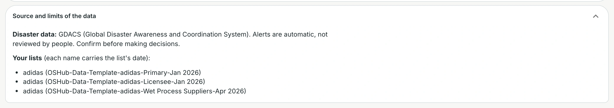
1Disaster data2Your lists
Shown "Source and limits of the data", opened.
- 1Disaster data. "GDACS (Global Disaster Awareness and Coordination System). Alerts are automatic, not reviewed by people. Confirm before making decisions."
- 2Your lists. The lists counted for adidas; "each name carries the list's date": Primary Jan 2026, Licensee Jan 2026 and Wet Process Suppliers Apr 2026.
What you do Read before acting on a number.
What happens next Nothing changes; this section only explains.
Code only When GDACS's list of current disasters repeats entries across its pages, a line here says that some disasters may be missing from the map. There was no such line at capture time. App.tsx
4Workflow: Where is my company exposed?
Start from the summary sentence and the cards (Figure 3), then use the tables and panels to see which countries, owners and sites make up each number. Steps 1 to 4 use adidas; step 5 uses Nike.
Step 1 Open the Countries table
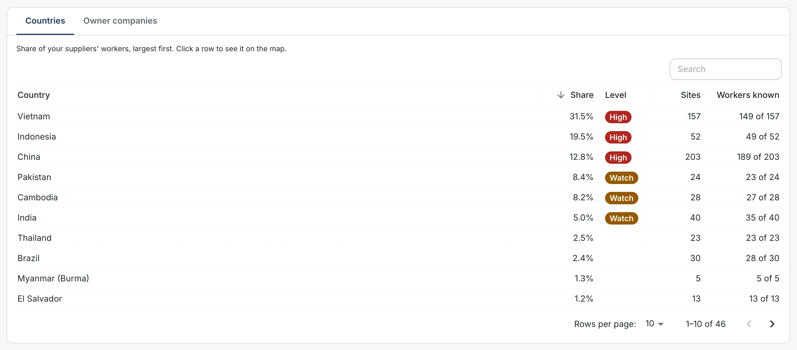
1Tabs2Search3Share4Vietnam5Rows and pages
Shown The tables below the map, on the Countries tab: "Share of your suppliers' workers, largest first. Click a row to see it on the map."
- 1Tabs. Countries or Owner companies.
- 2Search. Filters the rows as you type.
- 3Share. Sorted by Share, largest first. Click a column header to sort by that column.
- 4Vietnam. 31.5%, High, 157 sites, workers known for 149 of 157.
- 5Rows and pages. 10 rows per page (25, 50 or 100 can be chosen): "1–10 of 46".
What you do Click the Vietnam row.
What happens next The country panel opens (Figure 10) and the map moves to Vietnam's sites.
Step 2 Read the country panel
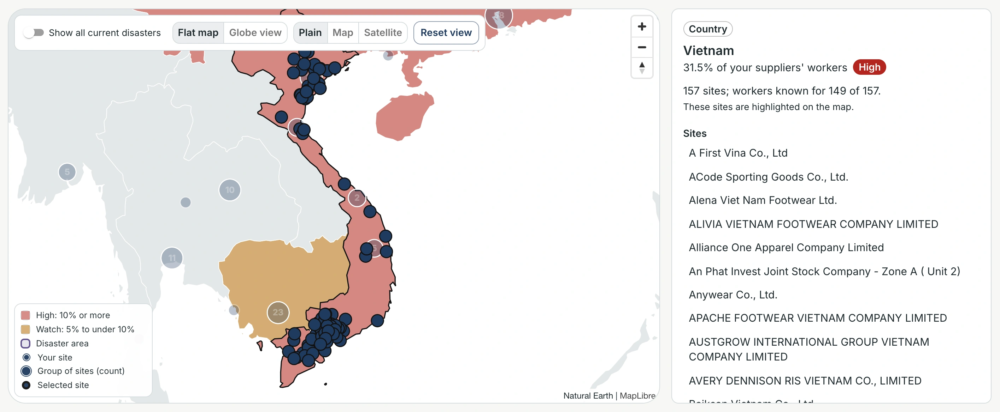
1Share and level2Sites3On the map
Shown The country panel for Vietnam.
- 1Share and level. "31.5% of your suppliers' workers", High. Below: "157 sites; workers known for 149 of 157. These sites are highlighted on the map."
- 2Sites. Vietnam's sites, A to Z.
- 3On the map. Vietnam is outlined and its sites are highlighted; other sites are faded.
What you do Click a site name.
What happens next The site panel opens (like Figure 13) and the map flies to the site, tilted.
Step 3 Switch to Owner companies
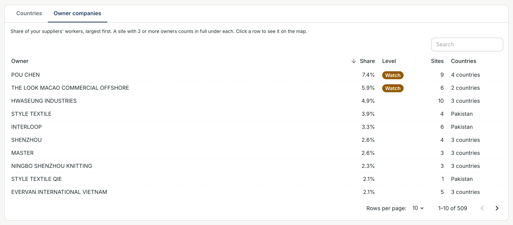
1Owner companies2POU CHEN3
Shown The Owner companies tab: "A site with 2 or more owners counts in full under each." 509 owners, 10 per page.
- 1Owner companies. The tab.
- 2POU CHEN. 7.4%, Watch, 9 sites, 4 countries.
- 3Countries. An owner in one country shows that country (STYLE TEXTILE: Pakistan); otherwise the number of countries.
What you do Click the POU CHEN row.
What happens next The owner panel opens (Figure 12) and the map moves to its sites.
Step 4 Read the owner panel
 1Share and level2
1Share and level2
Shown The owner panel for POU CHEN. Its 9 sites are highlighted on the map; other sites are faded.
- 1Share and level. "7.4% of your suppliers' workers", Watch. Below: "9 sites in 4 countries: China, Indonesia, Myanmar (Burma), Vietnam. Not all in one country."
- 2Its sites. Each site with its country.
What you do Click a site.
What happens next Its site panel opens and the map flies to it.
Step 5 Read a site panel (Nike)
 1Owner companies2Disaster area345The site
1Owner companies2Disaster area345The site
Shown The site panel for Nike's PT. Paxar Indonesia (Open Supply Hub ID ID2021182JC36SX), opened from Nike's Countries table (Indonesia), then the site. The panel also shows "Warnings: None." and "about 334 workers".
- 1Owner companies. AVERY DENNISON. Clicking an owner opens its owner panel.
- 2Disaster area. "Not inside a current disaster area."
- 3On your lists. The list the site is on: "Nike [Public List] (Nike Inc. Brand(s) February 2024 Facility List)".
- 4Parent company. "Direct parent: AVERY DENNISON CORPORATION" and "Top parent: AVERY DENNISON CORPORATION", from GLEIF. They show because a person confirmed this site's GLEIF match (Figure 23).
- 5The site. The selected site, with a ring. The map flew to it.
What you do Click the owner to see its other sites, or another site on the map.
What happens next The panel shows the owner or the other site.
Code only A site inside a disaster area lists that disaster with its alert and "High for your sites" or "Watch for your sites"; clicking it opens the disaster panel. A site inside an area whose country GDACS does not list as affected shows "Not counted: inside the area, but GDACS does not list … as affected." Panel.tsx
Code only Without a confirmed GLEIF match, Parent company reads "No confirmed parent company." Panel.tsx
5Workflow: A disaster hits
This example uses Amazon.com, Inc. and the drought DR1018332, current at capture time. Disaster data is live: on another day the areas, the sites inside them and the counts will differ.
Step 1. Click the Disasters now card: its panel lists each disaster with your sites inside. Click the drought there, or click its purple area on the map.
Step 2 Read the disaster panel
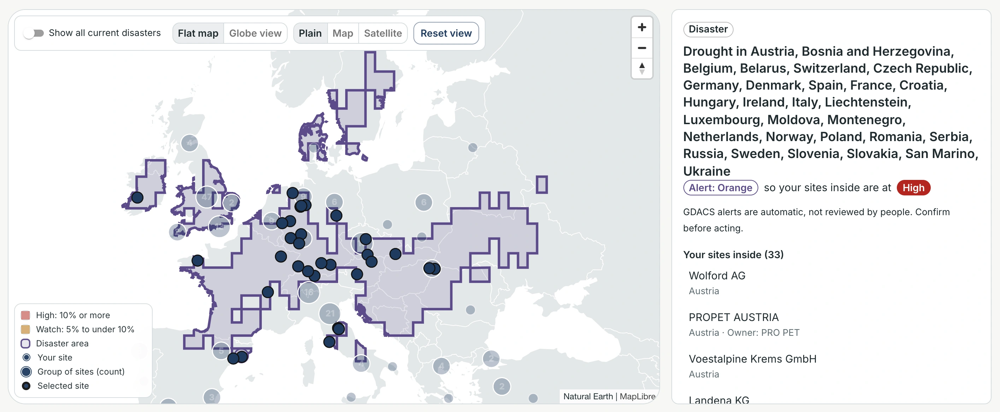
12Your sites inside (33)3The area
Shown The disaster panel for the drought, with the map fitted to its area and the sites inside.
- 1Alert and level. The disaster's name, with the countries GDACS lists; "Alert: Orange", "so your sites inside are at High"; and "GDACS alerts are automatic, not reviewed by people. Confirm before acting."
- 2Your sites inside (33). Each site with its country and owner, for example "PROPET AUSTRIA · Austria · Owner: PRO PET".
- 3The area. The drought's affected area, outlined more thickly while it is selected. The sites inside are highlighted.
What you do Scroll the panel.
What happens next The owners of those sites and the owners' other sites follow (Figure 15).
Step 3 See the owners
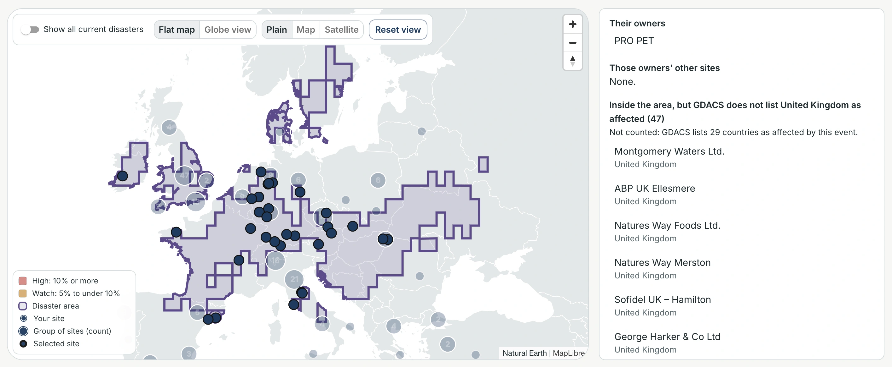
1Their owners2Other sites
Shown The same panel, scrolled down.
- 1Their owners. The owners of the sites inside: PRO PET. Clicking an owner opens its owner panel.
- 2Other sites. "Those owners' other sites": the same owners' other sites on your lists. "None." here: PRO PET has no other site on Amazon's lists.
What you do Scroll further.
What happens next The sites that are inside the area but not counted follow (Figure 16).
Step 4 Check the sites that are not counted
 1Not counted
1Not counted
Shown The end of the panel.
- 1Not counted. "Inside the area, but GDACS does not list United Kingdom as affected (47)", with "Not counted: GDACS lists 29 countries as affected by this event." Then the 47 sites in the United Kingdom. They are listed, but they are not among the 33 and do not change the level.
What you do Click a site to open its panel.
What happens next Its site panel says "Not counted: inside the area, but GDACS does not list United Kingdom as affected."
Step 5 When the owners have other sites (Apple)
 1Other sites
1Other sites
Shown The same drought for Apple, whose owners inside the area also have sites elsewhere.
- 1Other sites. "HENKEL AG AND KGAA: 3 other sites" (China, and two in the United States) and "INTEL: 8 other sites" (China, Israel, Malaysia, the United States, …).
What you do Click one of these sites.
What happens next Its site panel opens and the map flies to it. While the disaster is selected, these other sites are highlighted on the map with the sites inside.
6Workflow: Add a new supplier list
A company's list is an Open Supply Hub download (CSV). Nothing is loaded until you click "Load this company"; it was not clicked for this guide. The two files used here are in the repository: data/demo/amazon.csv and data/demo/facilities.csv.
Step 1 Open the upload page
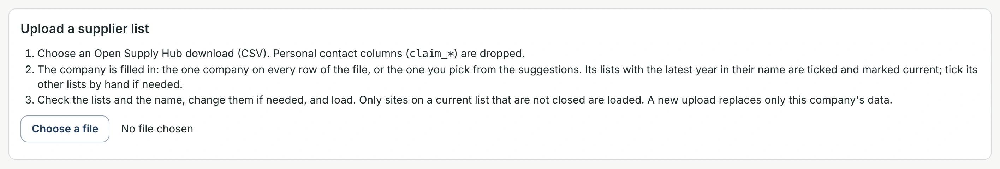
1The three steps2Choose a file
Shown Upload a supplier list, before a file is chosen.
- 1The three steps. "Choose an Open Supply Hub download (CSV). Personal contact columns (claim_*) are dropped." The company is filled in, and its lists with the latest year in their name are ticked and marked current. "Only sites on a current list that are not closed are loaded. A new upload replaces only this company's data."
- 2Choose a file. Opens the file picker. "No file chosen" until then.
What you do Click Choose a file and pick a CSV.
What happens next The file is sent to the app, which reads it and keeps it until you load it. The lists in it appear (Figure 19).
Step 2 A file for one company
 1Rows and lists2Company found3Ticked and current4The 2026 list
1Rows and lists2Company found3Ticked and current4The 2026 list
Shown amazon.csv chosen, not loaded.
- 1Rows and lists. "3798 rows in the file, naming 980 lists."
- 2Company found. "Amazon.com, Inc. is on every row of the file, so it is filled in. Check its lists below."
- 3Ticked and current. "Showing 850 of 980 lists; Amazon.com, Inc.'s lists first. Ticked: 1, current: 1." Above it: Search lists, and "Show all lists (130 hidden: anonymous types and "(Claimed)" entries)".
- 4The 2026 list. "Amazon.com, Inc. (Amazon Facility List 2026)", 1732 sites: ticked under Company's list and under Current. The 2022, 2023 and 2024 lists are not ticked.
What you do Check the ticks: Company's list marks the company's own lists; Current marks which of those count. Current can be ticked only on a ticked list.
What happens next Scroll down to the name and the load button (Figure 20).
Step 3 Check the name
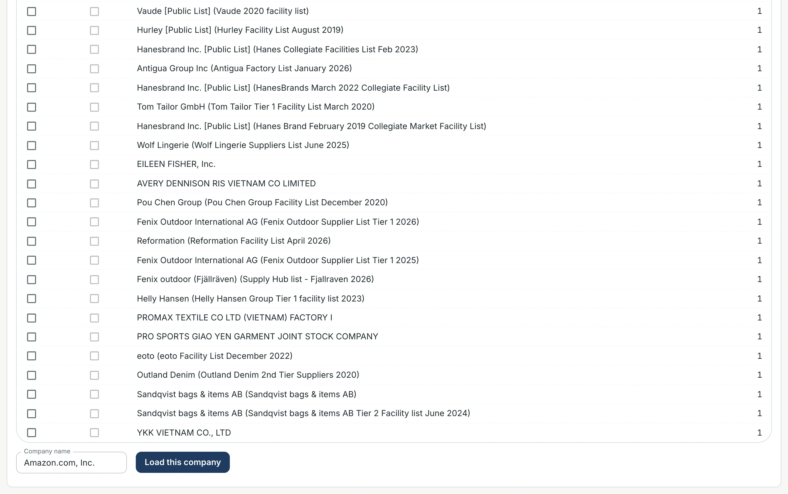
1Company name2Load this company
Shown The bottom of the same page.
- 1Company name. Filled in: "Amazon.com, Inc." It can be changed.
- 2Load this company. Loads the company (not clicked for this guide). It works only with a name and at least one ticked list marked Current.
What you do Click Load this company.
What happens next See the notes below: this step was not run.
Code only The app loads the sites on the current lists that are not closed, replacing only this company's data. The upload page reports "Loaded name: N sites on current lists (as of …).", and the app then opens Risk map with the company chosen. Upload.tsx, App.tsx, main.py
Code only For a company other than adidas and Nike, a GLEIF candidate search then starts in the background (the chip in the top bar, and Figure 25). main.py, gleif_api.py
Step 4 A file with several companies
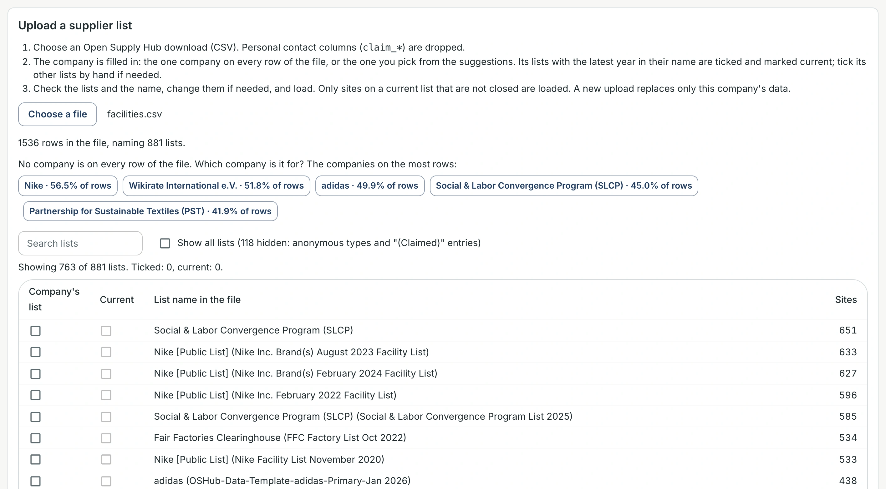
1Rows and lists2Suggestions3Search, Show all
Shown facilities.csv chosen, not loaded. No company is on every row, so none is filled in.
- 1Rows and lists. "1536 rows in the file, naming 881 lists."
- 2Suggestions. "No company is on every row of the file. Which company is it for? The companies on the most rows:" Nike 56.5%, Wikirate International e.V. 51.8%, adidas 49.9%, Social & Labor Convergence Program (SLCP) 45.0%, Partnership for Sustainable Textiles (PST) 41.9%.
- 3Search, Show all. Search lists, and "Show all lists (118 hidden: anonymous types and "(Claimed)" entries)". Below: "Showing 763 of 881 lists. Ticked: 0, current: 0."
What you do Click the company the file is for.
What happens next Its lists with the latest year in their name are ticked and marked current, its lists move to the top, and its name is filled in. You can change all three before loading.
7Workflow: Review a company match
The Company network page shows how Open Supply Hub sites and owner names are matched to GLEIF companies, for the company chosen in the top bar. "A match is only a candidate until a person confirms it here; a confirmed match shows its GLEIF parent companies, here and in the map's site panel. Verdicts are saved and kept after a restart." No verdict was given for this guide.
Step 1 Look at the candidates
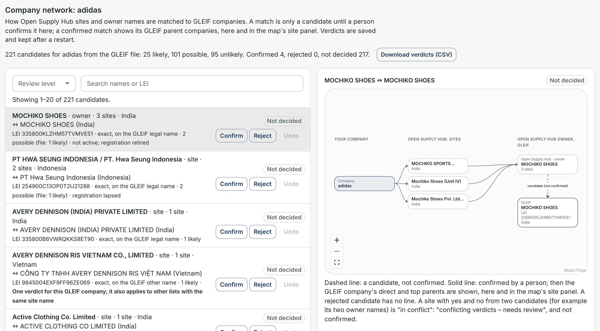
1Counts2Review level3Search4A candidate5Verdict buttons6Dashed line
Shown Company network for adidas: the candidates on the left, 20 per page ("Showing 1–20 of 221 candidates."), and the selected candidate's graph on the right.
- 1Counts. "221 candidates for adidas from the GLEIF file: 25 likely, 101 possible, 95 unlikely. Confirmed 4, rejected 0, not decided 217." Next to it, Download verdicts (CSV) downloads this company's verdicts.
- 2Review level. Shows all levels, or only 1 likely, 2 possible or 3 unlikely (each with its count).
- 3Search. Filters by your names, the GLEIF names or the LEI.
- 4A candidate. MOCHIKO SHOES · owner · 3 sites · India ↔ MOCHIKO SHOES (India). Below: its LEI, how the name matched ("exact, on the GLEIF legal name"), its level ("2 possible (file: 1 likely)") and GLEIF's status ("not active; registration retired"). Its chip: Not decided.
- 5Verdict buttons. Confirm: the same company. Reject: not the same company. Undo: takes back a verdict given on this page. None was clicked.
- 6Dashed line. Between the Open Supply Hub owner and the GLEIF company: a candidate, not confirmed.
What you do Click a candidate to see its graph; filter or search to find one.
What happens next The graph shows your company, its Open Supply Hub sites, the owner, and the GLEIF company. The text under it explains the lines.
Code only Confirm is greyed out once a candidate is confirmed, Reject once it is rejected, and Undo unless the verdict was given on this page. Network.tsx
Code only A site with yes and no from two candidates is marked "conflicting verdicts – needs review", is not confirmed and shows no parent; the row names the other candidate. Network.tsx
Step 2 A confirmed match, with its parent (Nike)
 1Confirmed2Solid line3Parent
1Confirmed2Solid line3Parent
Shown Nike's candidates, searched for "Paxar": 2 candidates. PT. Paxar Indonesia is selected.
- 1Confirmed. This candidate's verdict.
- 2Solid line. From the site PT. Paxar Indonesia to the GLEIF company PT PAXAR INDONESIA (LEI 549300YDGYNJ5OSNWF92): confirmed.
- 3Parent. "GLEIF · direct and top parent": AVERY DENNISON CORPORATION (LEI 549300PW7VPFCYKLIV37). The same parent shows in the map's site panel (Figure 13).
What you do Nothing more is needed for a confirmed match.
What happens next Undo is greyed out: this verdict comes from the saved verdict files, not from this page. Reject would remove the line and the parent.
Step 3 One verdict for every list (Apple)
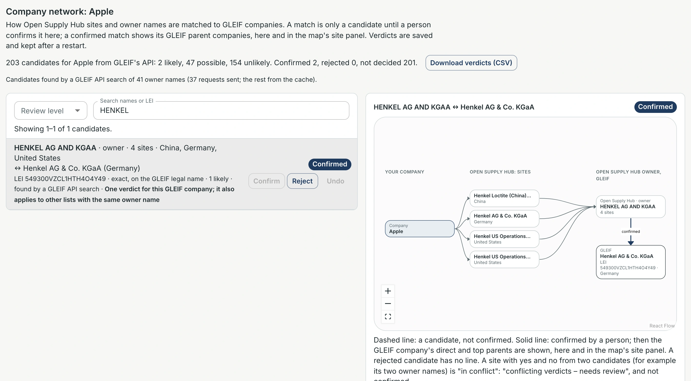
1Shared verdict2Your company
Shown Apple's candidates, searched for "HENKEL". The counts read "203 candidates for Apple from GLEIF's API: 2 likely, 47 possible, 154 unlikely. Confirmed 2, rejected 0, not decided 201." Under them: "Candidates found by a GLEIF API search of 41 owner names (37 requests sent; the rest from the cache)."
- 1Shared verdict. "One verdict for this GLEIF company; it also applies to other lists with the same owner name." A verdict here also counts for another company whose list has the same owner name matched to the same LEI.
- 2Your company. The graph shows only Apple and Apple's 4 HENKEL sites. Other companies with the same owner are not named.
What you do Give a verdict knowing it is shared.
What happens next The verdict applies on every company's page where the same owner name and LEI appear.
Step 4 No candidates yet (Samsung)
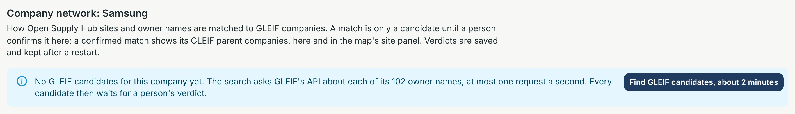
1No candidates yet2Find GLEIF candidates
Shown Company network for Samsung, before any GLEIF search.
- 1No candidates yet. "No GLEIF candidates for this company yet. The search asks GLEIF's API about each of its 102 owner names, at most one request a second. Every candidate then waits for a person's verdict."
- 2Find GLEIF candidates. "Find GLEIF candidates, about 2 minutes": starts the search. Not clicked for this guide.
What you do Click Find GLEIF candidates.
What happens next See the notes below: this step was not run.
Code only While the search runs: "Finding GLEIF candidates in the background: N of M owner names searched." with a progress bar and "You can keep using the app."; the list fills in as it goes. If it stops: "The GLEIF search stopped after …" with Try again. If GLEIF finds nothing: "GLEIF returned no candidates for this company's … owner names." Network.tsx
8Map styles
Plain (Figure 4) is the default: the app's own map, which needs no outside service. Map and Satellite add a base map from a free outside service under the same sites, shading and disaster areas. Both screenshots show adidas's Vietnam panel.
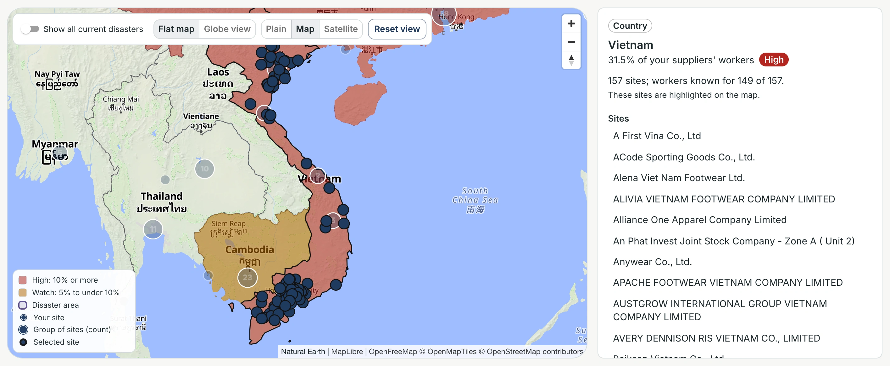
1Map2Credits
Shown The Map style, zoomed to Vietnam: borders, seas and place names (here in English and in local scripts).
- 1Map. Selected.
- 2Credits. "Natural Earth | MapLibre | OpenFreeMap © OpenMapTiles © OpenStreetMap contributors", always shown in full.
What you do Switch styles at any time.
What happens next Only the base map changes; the selection and the panel stay.
Code only On Map and Satellite only the High and Watch countries are filled, and on Map the base map's own borders replace the app's white ones. basemap.ts, MapView.tsx
 1Satellite2Credits
1Satellite2Credits
Shown The Satellite style, with its tiles loaded.
- 1Satellite. Selected.
- 2Credits. "EOxCloudless https://cloudless.eox.at by EOX IT Services GmbH (Contains modified Copernicus Sentinel data 2016 & 2017) CC BY 4.0", always shown in full.
What you do Click Plain to go back to the app's own map.
What happens next The base map is removed.
- A switch replaces only the base map below the app's layers: sites, shading and disaster areas stay on the map while the new tiles fill in.
- The first switch to Map fetches its style from OpenFreeMap; "Loading map style…" shows over the map meanwhile. Later switches use the copy already fetched.
- If the service does not respond, the map goes back to Plain and a line under the map says so: "Map: OpenFreeMap did not respond, so the plain map is shown." or "Satellite: EOX did not respond, so the plain map is shown."
9Good to know
Limits that the app itself shows on screen.
- Disaster alerts are automatic."GDACS alerts are automatic, not reviewed by people. Confirm before acting." Figure 14; Source and limits of the data says the same (Figure 8).
- Disaster data is live.The top bar says when it was last read (Figure 1). This guide's screenshots show the disasters current at 3 Oct 2026, 13:07 UTC.
- Some sites inside an area are not counted.A site inside an area whose country GDACS does not list as affected is listed, but not counted: "Inside the area, but GDACS does not list United Kingdom as affected (47)". Figure 16
- Every number shows its base.For example "Owner known for 551 of 766 sites" and "workers known for 149 of 157". Figure 3, Figure 10, Figure 7
- Shares use workers only when they are known for at least 90% of sites.Figure 7
- A site with 2 or more owners counts in full under each owner.Figure 11, Figure 7
- Lists are dated."Each name carries the list's date", for example Jan 2026 and Apr 2026 for adidas, and February 2024 for Nike's PT. Paxar Indonesia. Figure 8, Figure 13
- Only sites on a current list that are not closed are counted and loaded.Figure 7, Figure 18
- Some lists in an upload are hidden by default."Show all lists (130 hidden: anonymous types and "(Claimed)" entries)". Figure 19
- A GLEIF match is only a candidate until a person confirms it.A parent company shows only after that. Figure 22, Figure 13
- The GLEIF search takes minutes."At most one request a second": about 2 minutes for Samsung's 102 owner names. Figure 25
- Satellite imagery is not current.Its credit names "Copernicus Sentinel data 2016 & 2017". Figure 27